White Beach: North of Moalboal lies Basdaku White Beach, a long pale-sand beach. In the afternoon kinilaw – Philippine ceviche – and in the evening sunset on the beach and a German beer garden with wheat beer in Moalboal. Then on to the bars along Panagsama Road.
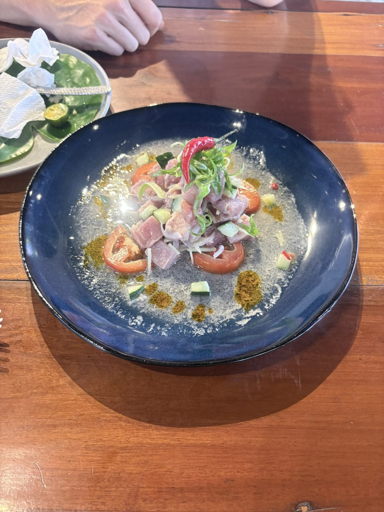
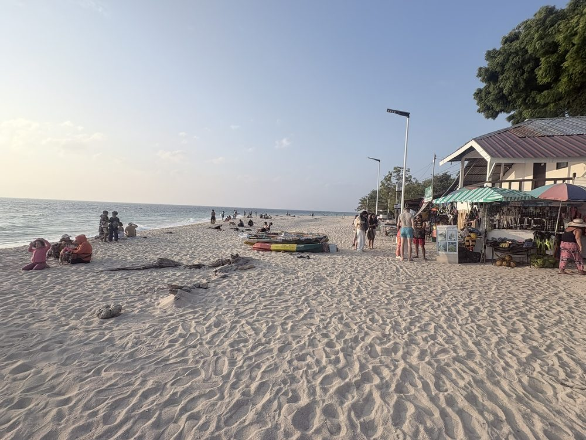
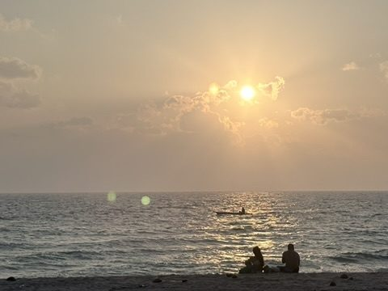
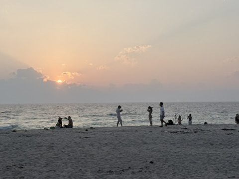
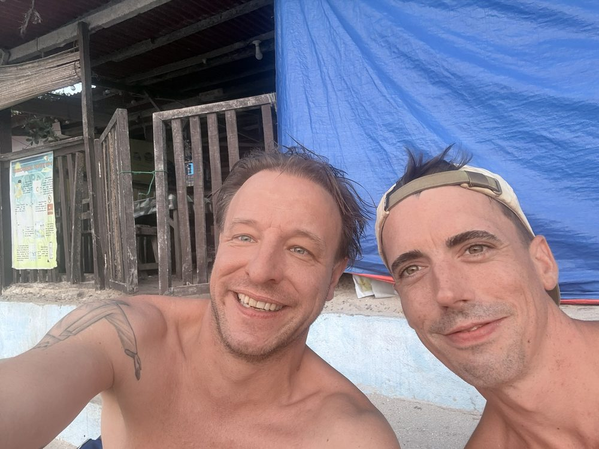
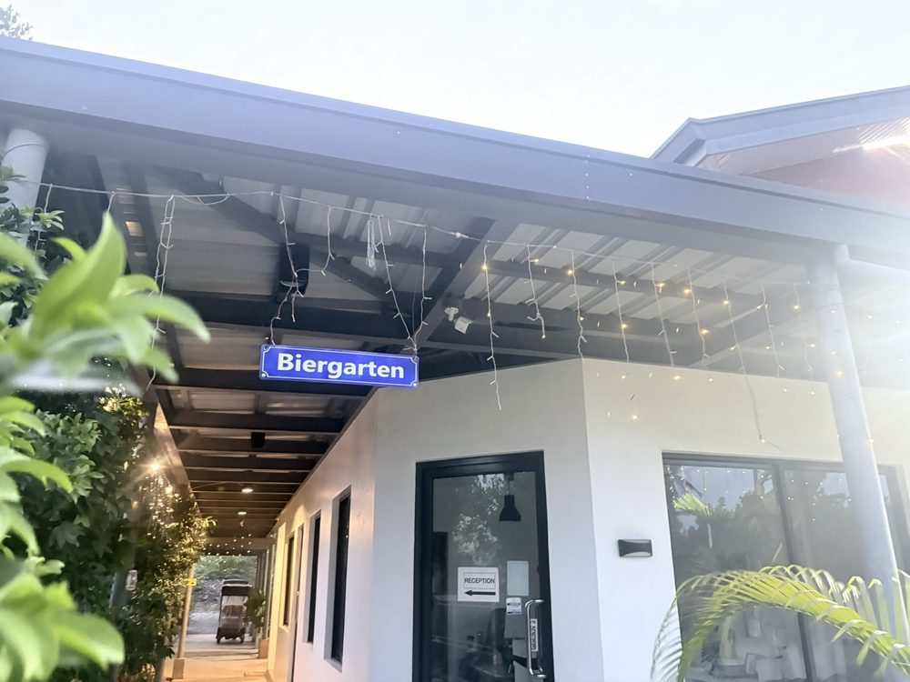
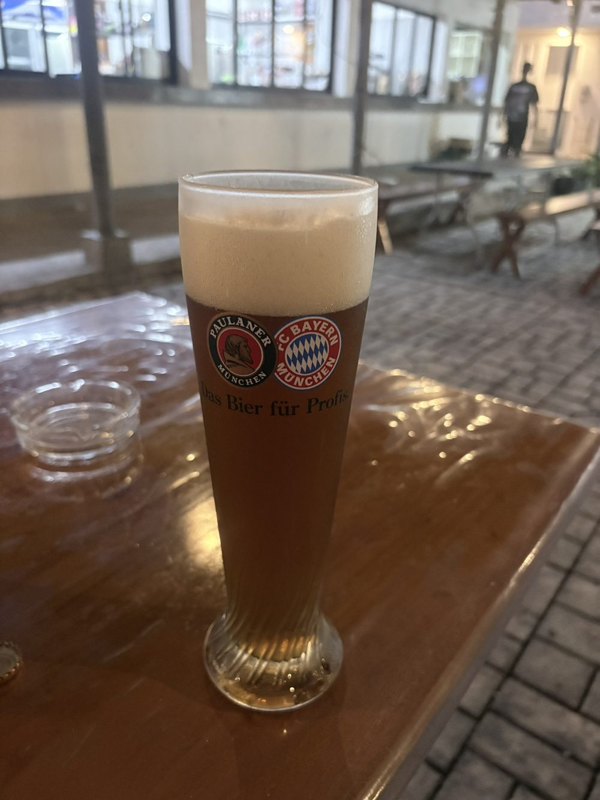
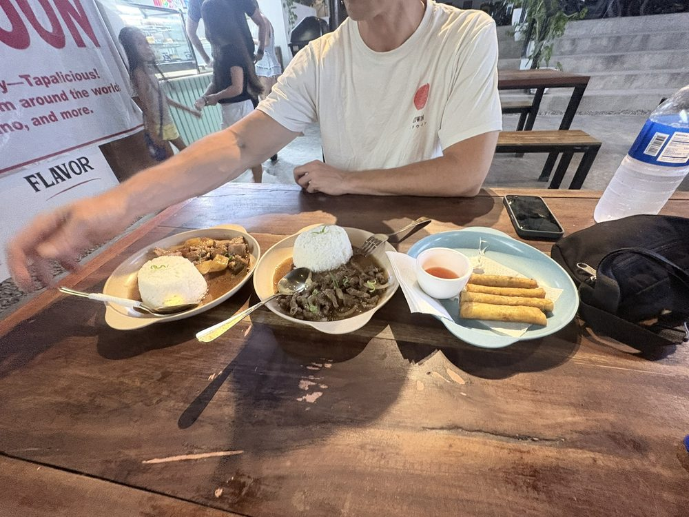
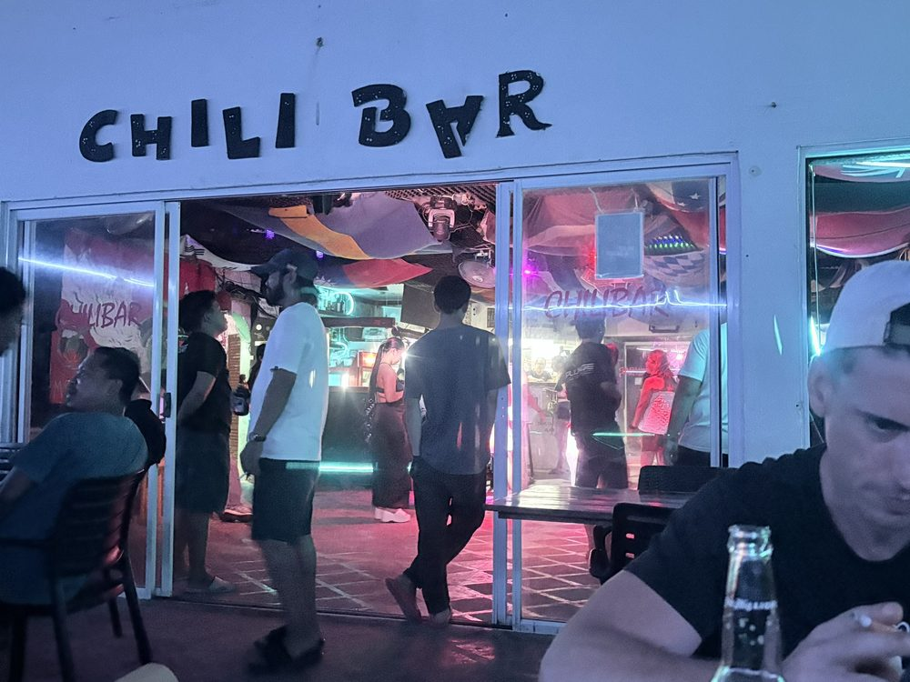
Cebu City: Back to Cebu City, the oldest city in the Philippines: Magellan landed here in 1521, and in 1565 the Spanish founded their first settlement. In the evening around the Fuente Osmeña roundabout – jeepneys, mopeds, churches, food stalls.
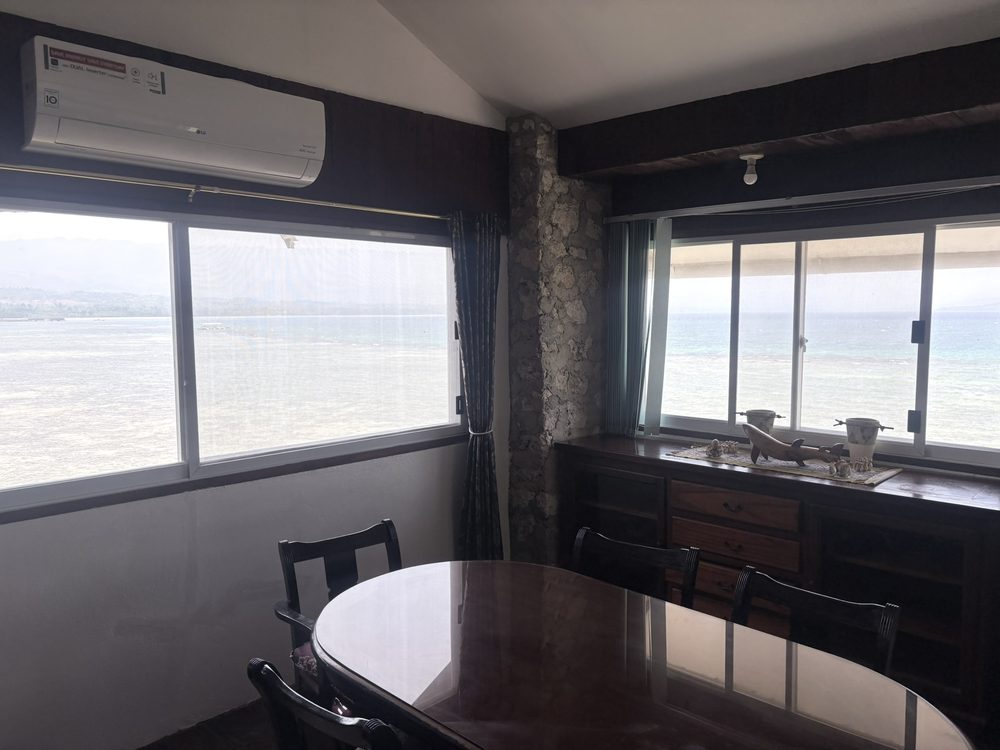
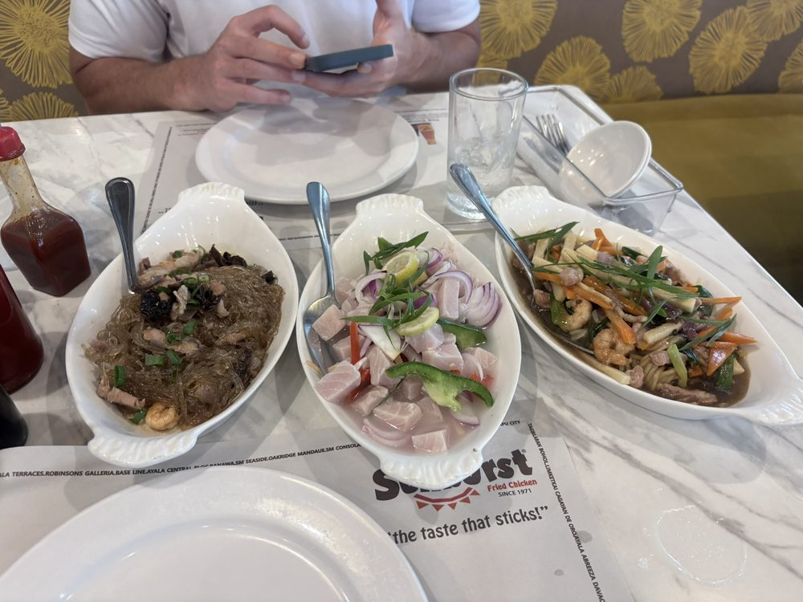
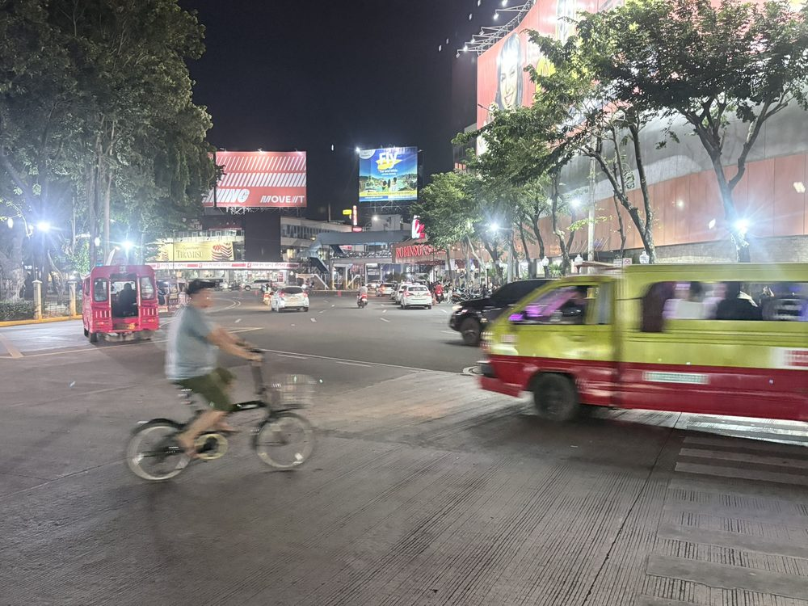
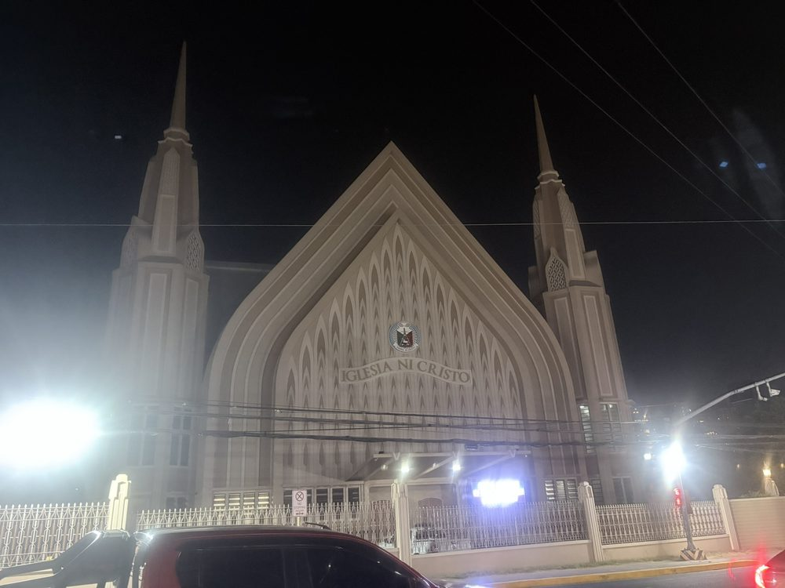